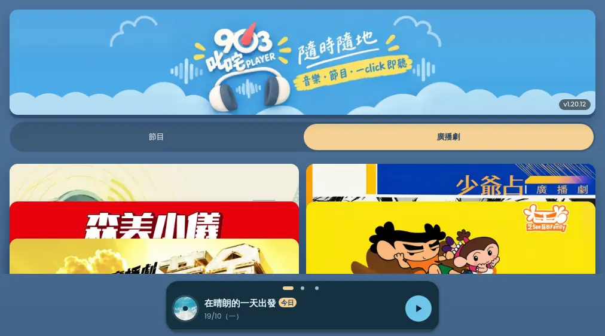
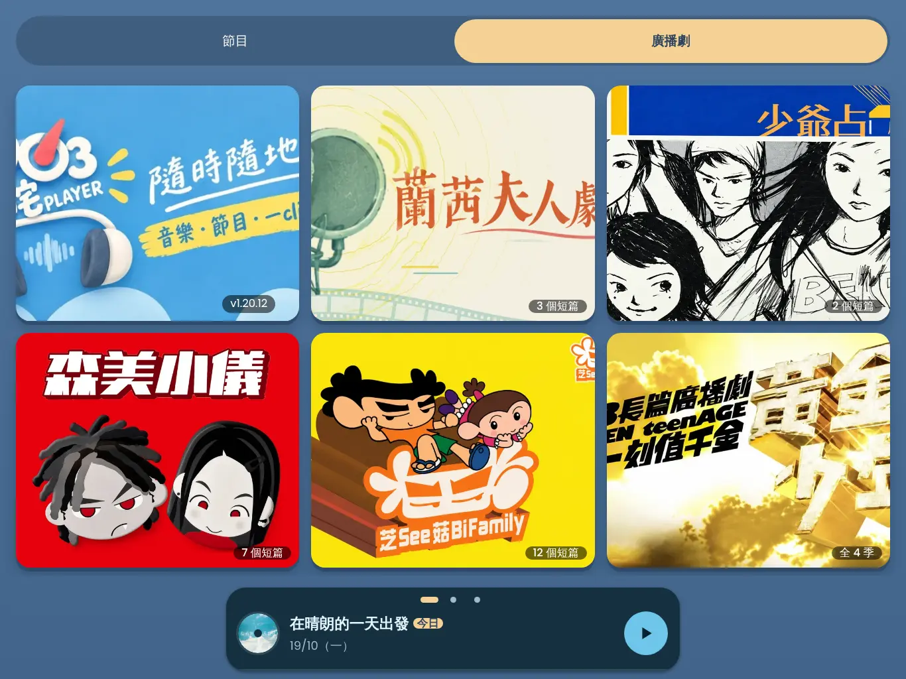
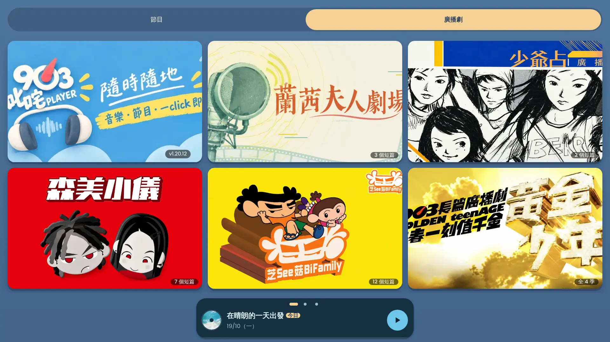

CUI-0015 橫版廣播劇 card preview
真 app build 截圖（v1.20.12 假資料，5 套劇 + mini player）。「而家」= 現時 main；A / B 係候選方案，未寫入 repo code。
| 方案 | 做法 | 結果（5 個尺寸量度） |
|---|---|---|
| 而家 | 橫額釘頂，劇集兩欄；高 ≥ 562px 時格高被壓扁 | 每個尺寸都有 4 對 card 疊住 |
| A（推薦） | 廣播劇 tab 喺所有橫版（≥ 640px 闊）都用手機打橫嘅格仔：橫額縮做第一格，劇集逐格完整顯示（即係你圖 2）。節目 tab 唔變 | 0 對重疊；5 套全部一屏見晒。大 iPad（1366 × 1024）格接近正方形，圖兩邊會裁多啲 |
| B | 只改 CSS：橫額照釘頂，兩欄 card 保持 2:1 原大，放唔落就上下捲 | 0 對重疊，但每個尺寸都有 3 張要捲先見到 |
1012 × 562（你嘅圖 1 尺寸）

640 × 562（開始出問題嘅最細尺寸）
1180 × 820（iPad Air 打橫）
1366 × 1024（iPad Pro 打橫）

1920 × 1080（桌面）
